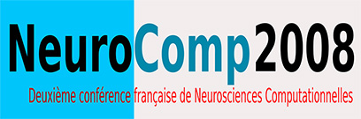

Computational Neuroscience: From Representations to Behavior
Second NeuroComp Marseille Workshop

Computational Neuroscience: From Representations to Behavior
Second NeuroComp Marseille Workshop
-
Date: 27-28 May 2010
-
Location: Amphithéâtre Charve at the Saint-Charles' University campus
Computational Neuroscience emerges now as a major breakthrough in exploring cognitive functions. It brings together theoretical tools that elucidate fundamental mechanisms responsible for experimentally observed behaviour in the applied neurosciences. This is the second Computational Neuroscience Workshop organized by the “NeuroComp Marseille” network.
It will focus on latest advances on the understanding of how information may be represented in neural activity (1st day) and on computational models of learning, decision-making and motor control (2nd day). The workshop will bring together leading researchers in these areas of theoretical neuroscience. The meeting will consist of invited speakers with sufficient time to discuss and share ideas and data. All conferences were in English.
Program
27 May 2010 Neural representations for sensory information & the structure-function relation
9h00-9h30
Reception and coffee
9h30-10h00
Laurent Perrinet Institut de Neurosciences Cognitives de la Méditerranée, CNRS and Université de la Méditerranée - Marseille «Presentation of the Workshop and Topic»
10h00-11h00
Gabriel Peyré CNRS and Université Paris-Dauphine «Sparse Geometric Processing of Natural Images» In this talk, I will review recent works on the sparse representations of natural images. I will in particular focus on both the application of these emerging models to image processing problems, and their potential implication for the modeling of visual processing. Natural images exhibit a wide range of geometric regularities, such as curvilinear edges and oscillating textures. Adaptive image representations select bases from a dictionary of orthogonal or redundant frames that are parameterized by the geometry of the image. If the geometry is well estimated, the image is sparsely represented by only a few atoms in this dictionary. On an ingeniering level, these methods can be used to enhance the resolution of super-resolution inverse problems, and can also be used to perform texture synthesis. On a biological level, these mathematical representations share similarities with low level grouping processes that operate in areas V1 and V2 of the visual brain. We believe both processing and biological application of geometrical methods work hand in hand to design and analyze new cortical imaging methods.
11h00-12h00
Jean Petitot Centre d’Analyse et de Mathématique Sociales, Ecole des Hautes Etudes en Sciences Sociales - Paris «Neurogeometry of visual perception» In relation with experimental data, we propose a geometric model of the functional architecture of the primary visual cortex (V1) explaining contour integration. The aim is to better understand the type of geometry algorithms implemented by this functional architecture. The contact structure of the 1-jet space of the curves in the plane, with its generalization to the roto-translation group, symplectifications, and sub-Riemannian geometry, are all neurophysiologically realized by long-range horizontal connections. Virtual structures, such as illusory contours of the Kanizsa type, can then be explained by this model.
12h00
Lunch
14h00-14h45
Peggy Series Institute for Adaptive and Neural Computation, Edinburgh «Bayesian Priors in Perception and Decision Making» We’ll present two recent projects:
- The first project (with M. Chalk and A. R. Seitz) is an experimental investigation of the influence of expectations on the perception of simple stimuli. Using a simple task involving estimation and detection of motion random dots displays, we examined whether expectations can be developed quickly and implicitly and how they affect perception. We find that expectations lead to attractive biases such that stimuli appear as being more similar to the expected one than they really are, as well as visual hallucinations in the absence of a stimulus. We discuss our findings in terms of Bayesian Inference.
- In the second project (with A. Kalra and Q. Huys), we explore the concepts of optimism and pessimism in decision making. Optimism is usually assessed using questionnaires, such as the LOT-R. Here, using a very simple behavioral task, we show that optimism can be described in terms of a prior on expected future rewards. We examine the correlation between the shape of this prior for individual subjects and their scores on questionnaires, as well as with other measures of personality traits.
14h45-15h45
Heiko Neumann (in collaboration with Florian Raudies) Inst. of Neural Information Processing, Ulm University Germany «Cortical mechanisms of transparent motion perception – a neural model» Transparent motion is perceived when multiple motions different in directions and/or speeds are presented in the same part of visual space. In perceptual experiments the conditions have been studied under which motion transparency occurs. An upper limit in the number of perceived transparent layers has been investigated psychophysically. Attentional signals can improve the perception of a single motion amongst several motions. While criteria for the occurrence of transparent motion have been identified only few potential neural mechanisms have been discussed so far to explain the conditions and mechanisms for segregating multiple motions. A neurodynamical model is presented which builds upon a previously developed neural architecture emphasizing the role of feedforward cascade processing and feedback from higher to earlier stages for selective feature enhancement and tuning. Results of computational experiments are consistent with findings from physiology and psychophysics. Finally, the model is demonstrated to cope with realistic data from computer vision benchmark databases. Work supported by European Union (project SEARISE), BMBF, and CELEST
15h45-15h00
Coffee break
16h00-17h00
CANCELED Rudolf Friedrich Institute für Theoretische Physik Westfälische Wilhelms Universität Münster «Windows to Complexity: Disentangling Trends and Fluctuations in Complex Systems» In the present talk, we discuss how to perform an analysis of experimental data of complex systems by disentangling the effects of dynamical noise (fluctuations) and deterministic dynamics (trends). We report on results obtained for various complex systems like turbulent fields, the motion of dissipative solitons in nonequilibrium systems, traffic flows, and biological data like human tremor data and brain signals. Special emphasis is put on methods to predict the occurrence of qualitative changes in systems far from equilibrium. [1] R. Friedrich, J. Peinke, M. Reza Rahimi Tabar: Importance of Fluctuations: Complexity in the View of stochastic Processes (in: Springer Encyclopedia on Complexity and System Science, (2009))
17h00-17h45
General Discussion
28 May 2010 Computational models of learning and decision making
9h30-10h00
Andrea Brovelli Institut de Neurosciences Cognitives de la Méditerranée, CNRS and Université de la Méditerranée - Marseille «An introduction to Motor Learning, Decision-Making and Motor Control»
10h00-11h00
Emmanuel Daucé Mouvement & Perception, UMR 6152, Faculté des sciences du sport «Adapting the noise to the problem : a Policy-gradient approach of receptive fields formation» In machine learning, Kernel methods are give a consistent framework for applying the perceptron algorithm to non-linear problems. In reinforcement learning, the analog of the perceptron delta-rule is called the “policy-gradient” approch proposed by Williams in 1992 in the framework of stochastic neural networks. Despite its generality and straighforward applicability to continuous command problems, quite few developments of the method have been proposed since. Here we present an account of the use of a kernel transformation of the perception space for learning a motor command, in the case of eye orientation and multi-joint arm control. We show that such transformation allows the system to learn non-linear transformation, like the log-like resolution of a foveated retina, or the transformation from a cartesian perception space to a log-polar command, by shaping appropriate receptive fields from the perception to the command space. We also present a method for using multivariate correlated noise for learning high-DOF control problems, and propose some interpretations on the putative role of correlated noise for learning in biological systems.
11h00-12h00
Máté Lengyel Computational & Biological Learning Lab, Department of Engineering, University of Cambridge «Why remember? Episodic versus semantic memories for optimal decision making» Memories are only useful inasmuch as they allow us to act adaptively in the world. Previous studies on the use of memories for decision making have almost exclusively focussed on implicit rather than declarative memories, and even when they did address declarative memories they dealt only with semantic but not episodic memories. In fact, from a purely computational point of view, it seems wasteful to have memories that are episodic in nature: why should it be better to act on the basis of the recollection of single happenings (episodic memory), rather than the seemingly normative use of accumulated statistics from multiple events (semantic memory)? Using the framework of reinforcement learning, and Markov decision processes in particular, we analyze in depth the performance of episodic versus semantic memory-based control in a sequential decision task under risk and uncertainty in a class of simple environments. We show that episodic control should be useful in a range of cases characterized by complexity and inferential noise, and most particularly at the very early stages of learning, long before habitization (the use of implicit memories) has set in. We interpret data on the transfer of control from the hippocampus to the striatum in the light of this hypothesis.
12h00-14h00
Lunch
14h00-15h00
Rafal Bogacz Department of Computer Science, University of Bristol «Optimal decision making and reinforcement learning in the cortico-basal-ganglia circuit» During this talk I will present a computational model describing decision making process in the cortico-basal ganglia circuit. The model assumes that this circuit performs statistically optimal test that maximizes speed of decisions for any required accuracy. In the model, this circuit computes probabilities that considered alternatives are correct, according to Bayes’ theorem. This talk will show that the equation of Bayes’ theorem can be mapped onto the functional anatomy of a circuit involving the cortex, basal ganglia and thalamus. This theory provides many precise and counterintuitive experimental predictions, ranging from neurophysiology to behaviour. Some of these predictions have been already validated in existing data and others are a subject of ongoing experiments. During the talk I will also discuss the relationships between the above model and current theories of reinforcement learning in the cortico-basal-ganglia circuit.
15h00-15h30
Coffee break
15h30-16h30
Emmanuel Guigon Institut des Systèmes Intelligents et de Robotique, UPMC - CNRS / UMR 7222 «Optimal feedback control as a principle for adaptive control of posture and movement»
16h30-17h15
General Discussion
Sponsored by



Laurent U Perrinet
Researcher in Computational Neuroscience
My research interests include Machine Learning and computational neuroscience applied to Vision.